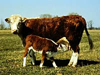

Carcass grading systems are used in Canada to describe quality of the cuts of beef. This carcass grade is considered along with the type and breed of cattle, group size, uniformity and condition of the animals to formulate a price. Cattle prices in Canada are usually influenced by American prices because the border is open to import and export of livestock and there are many more cattle raised in the US. Cattle prices are also dependent upon the cost of feed required to raise them to market weight. Cattle prices are cyclic and do vary throughout the year, being lowest in November and reaching a peak between March and May. Retail prices do not generally follow the same pattern or degree of fluctuation as sales of live animals. Saskatchewan participates in a National Check-Off (monetary deduction on the sale of cattle) for beef producers. Beginning Aug. 1, 1998, a $2 check-off, combining the provincial $1 check-off (which was already being collected) and a $1 national deduction is collected at the point of sale by
auction markets, dealers and packing plants, or by livestock inspectors when animals are shipped for export. The deduction is
deposited in a fund, managed by a producer committee and used for
research and promotion of the beef industry.
The Canadian grading system assigns a Canada or B grade to carcasses from young animals with varying lean meat yields, fat distribution and colour. D grades are assigned to more mature animals. The E grade is reserved for intact males or masculine animals. Masculine animals are discounted because they tend to produce less tender cuts of beef.
| Grade | Muscling | Muscle Colour | Marbling | Fat Amount | Colour |
| Canada 1 |
good - excellent |
bright red |
trace |
> 4mm |
white |
| Canada 2 |
good - excellent |
bright red |
slight |
> 4mm |
white |
| Canada 3 |
good - excellent |
bright red |
small |
> 4mm |
white |
| B1 |
good - excellent |
bright red |
white | | |
| B2 |
deficient - excellent |
bright red |
| |
yellow |
| B3 |
deficient - good |
bright red |
| |
white |
| B4 |
deficient - excellent |
dark red |
| |
white - yellow |
| D1 |
excellent |
| |
> 15mm |
white |
| D2 |
medium - excellent |
| |
> 15mm |
white - yellow |
| D3 |
deficient |
| |
> 15mm | |
| D4 |
deficient - excellent |
| |
> 15mm | |
| E |
bull/stag carcasses
with pronounced
masculinity | | | | |
|